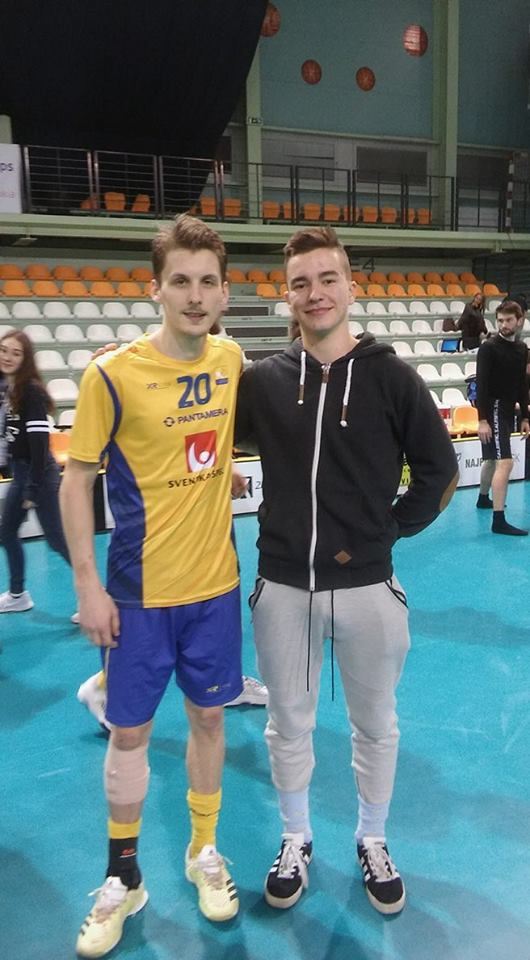

Emil Johansson is a key player in Falun’s notorious first line. His position as defender can sometimes be completely forgotten as he’s often found running around in the offensive zone, utilizing his quick feet, great techassist Galante.Emil Johansson is a key player in Falun’s notorious first line. His position as defender can sometimes be completely forgotten as he’s often found running around in the offensive zone, utilizing his quick feet, great technique, snappy shot and genius passes which he often uses to assist Galante.Emil Johansson is a key player in Falun’s notoriounique, snappy shot and genius passes which he often uses to assist Galante.Emil Johansson is a key player in Falun’s notorious first line. His position as defender can sometimes be completely forgotten as he’s often found running around in the offensive zone, utilizing his quick feet, great technique, snappy shot and genius passes which he often uses to s first line. His position as defender can sometimes be completely forgotten as he’s often found running around in the offensive zone, utilizing his quick feet, great technique, snappy shot and genius passes whitimes be completely forgotten as he’s often found running around in the offensive zone, utilizing his quick feet,ch he often uses to assist Galante.Emil Johansson is a key player in Falun’s notorious first line. His position as defender can sometimes be completely forgotten as he’s often found running around in the offensive zone, utilizing his quick feet, great technique, snappy shot and genius passes which he often uses to assist Galante.Emil Johansson is a key player in Falun’s notorious first line. His position as defender can some great technique, snappy shot and genius passes which he often uses to assist Galante.
